S30 — Passwords और Encryption राज़ कैसे बचाते हैं?
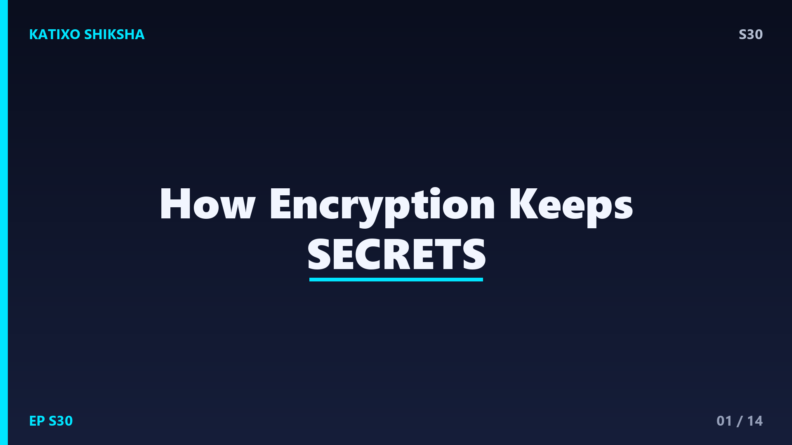
Slide 1दोस्तों, सोचो तुम WhatsApp पर किसी दोस्त को message भेजते हो, या online कोई payment करते हो। वो message internet के हज़ारों रास्तों, servers और routers से होकर गुज़रता है। तो फिर बीच में कोई hacker उसे पढ़ क्यों नहीं लेता? तुम्हारा password करोड़ों लोगों के बीच safe कैसे रहता है? इसका जवाब है एक जादुई शब्द, encryption! यह वो अदृश्य ताला है जो हमारी digital दुनिया को सुरक्षित रखता है। आज Katixo Shiksha पर हम समझेंगे कि कैसे गणित और logic मिलकर हमारे राज़ बचाते हैं। चलो दोस्तों, secrets की दुनिया में चलते हैं!
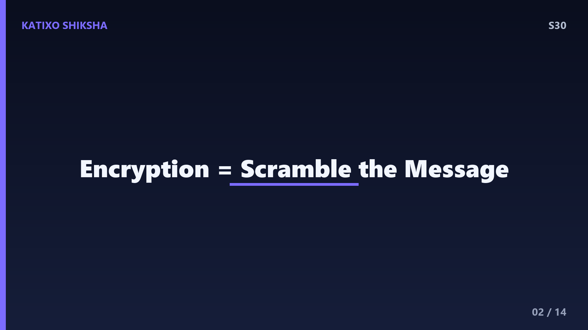
Slide 2सबसे पहले encryption का basic idea समझो। दोस्तों, encryption का मतलब है किसी सामान्य पढ़ने लायक message को एक उलझे हुए, बेमतलब code में बदल देना, ताकि बीच में कोई पढ़ ना सके। असली message को कहते हैं plaintext, और उलझे हुए code को कहते हैं ciphertext। इसे वापस पढ़ने लायक बनाने को decryption कहते हैं। यह कोई नई चीज़ नहीं है! हज़ारों साल पहले राजा-महाराजा और सेनापति भी secret messages भेजने के लिए codes इस्तेमाल करते थे। बस आज वो काम computers बहुत तेज़ और ताकतवर तरीके से करते हैं। पुराना idea, नई technology!
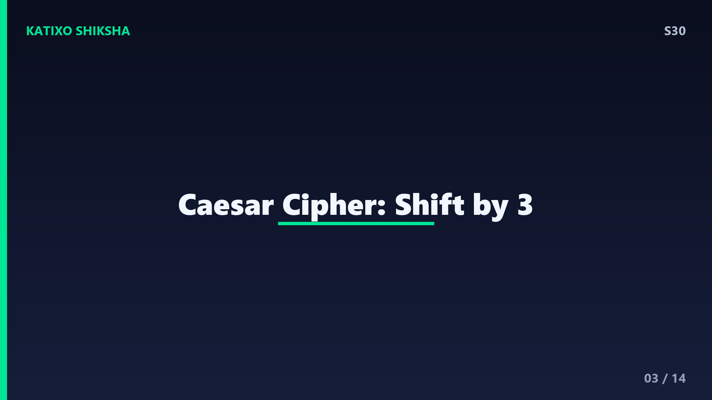
Slide 3चलो इतिहास का एक मज़ेदार example देखते हैं, Caesar Cipher। दोस्तों, रोम के राजा Julius Caesar अपने secret messages में हर अक्षर को आगे की तरफ 3 letters खिसका देते थे। जैसे A बन जाता B नहीं, बल्कि D, और B बन जाता E। तो शब्द CAT लिखा जाता FDW! जिसे यह राज़ यानी shift का number पता हो, वही इसे वापस पढ़ सकता था। यह था एक simple encryption। पर इसकी कमज़ोरी यह थी कि सिर्फ 25 तरीके संभव थे, तो कोई भी आराम से try करके तोड़ सकता था। फिर भी, यह encryption की सोच की शुरुआत थी। बहुत clever idea था अपने ज़माने का!
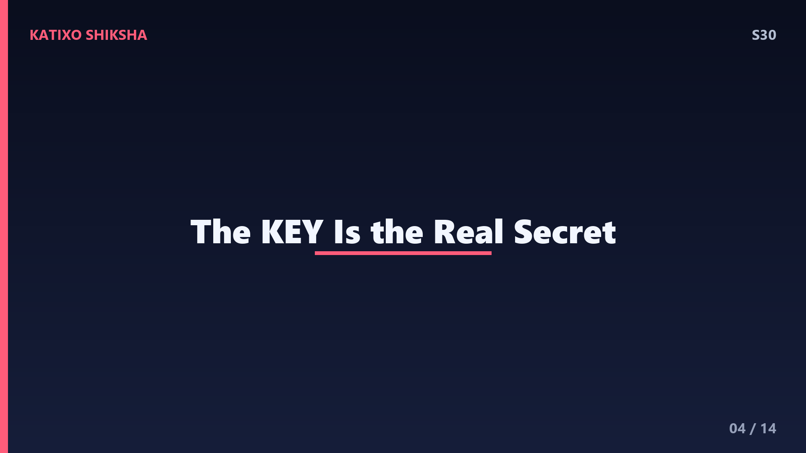
Slide 4अब आता है encryption का दिल, key यानी चाबी! दोस्तों, हर encryption में एक secret key होती है, बिल्कुल असली ताले की चाबी जैसी। यही key तय करती है कि message कैसे उलझाया जाए और कैसे सुलझाया जाए। Caesar cipher में key थी number 3, यानी कितने letters खिसकाने हैं। बिना सही key के, ciphertext बस बेमतलब अक्षरों का ढेर है। आज की keys बहुत लंबी और जटिल होती हैं, 256 bits तक, जिसका मतलब है इतने संभावित combinations कि उन्हें गिनना ही नामुमकिन है। key जितनी लंबी, encryption उतना मज़बूत। चाबी ही असली राज़ है!
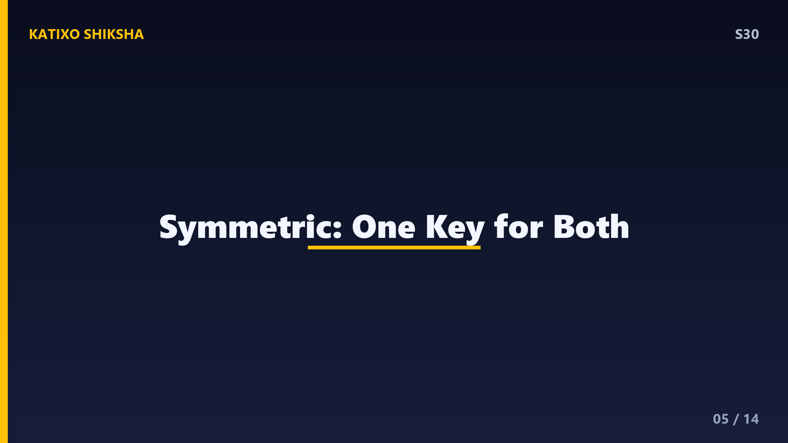
Slide 5अब encryption के दो मुख्य प्रकार। पहला, symmetric encryption। दोस्तों, इसमें message को lock और unlock करने के लिए एक ही key इस्तेमाल होती है। यानी जो चाबी बंद करती है, वही खोलती है। यह बहुत तेज़ है, पर इसमें एक दिक्कत है, वो एक key दोनों लोगों के पास सुरक्षित कैसे पहुँचे? अगर वो key भेजते समय कोई चुरा ले, तो सब बेकार! जैसे तुम किसी को बंद तिजोरी भेजो पर चाबी भी उसी रास्ते भेजनी पड़े। इसी समस्या का हल अगले प्रकार में है, जो सच में एक genius idea है!
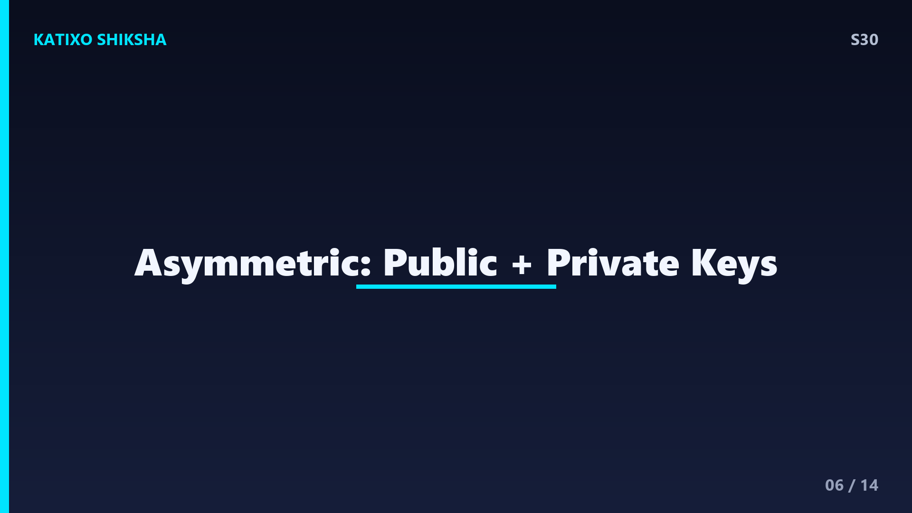
Slide 6दूसरा प्रकार है asymmetric encryption, और यह बहुत smart है! दोस्तों, इसमें एक नहीं, बल्कि दो keys होती हैं, जो आपस में जुड़ी हैं, एक public key और एक private key। public key सबको दी जा सकती है, और इससे कोई भी तुम्हें message lock करके भेज सकता है। पर उसे खोल सकती है सिर्फ तुम्हारी private key, जो सिर्फ तुम्हारे पास रहती है। यानी public key से बंद ताला सिर्फ private key से खुलता है! इससे key भेजने की समस्या खत्म हो जाती है। यही जादू online banking और websites को safe रखता है। है ना कमाल का logic!
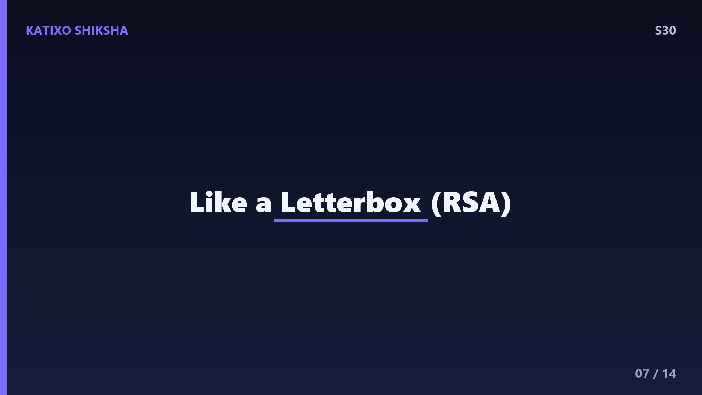
Slide 7इसे एक आसान example से समझो, एक खुला letterbox। दोस्तों, सोचो तुम्हारा एक letterbox है जिसमें कोई भी चिट्ठी डाल सकता है, यानी lock कर सकता है, यही है public key। पर उस letterbox को खोलने की चाबी सिर्फ तुम्हारे पास है, यानी private key। तो कोई भी तुम्हें secret message भेज सकता है, पर पढ़ सकते हो सिर्फ तुम। इसी पर आधारित है एक famous system जिसे RSA encryption कहते हैं, जो बड़ी-बड़ी prime numbers के गणित पर काम करता है। इन numbers को गुणा करना आसान है, पर वापस तोड़ना computers के लिए भी बहुत मुश्किल। यही इसकी ताकत है!
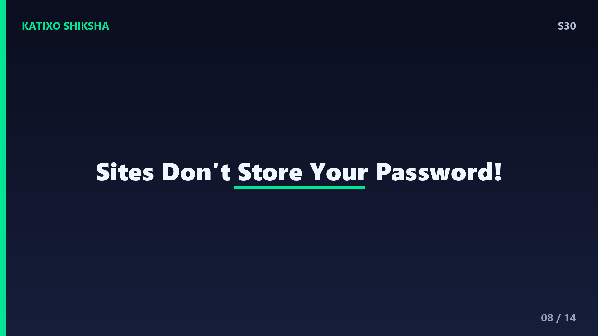
Slide 8अब बात passwords की, जो थोड़ी अलग और बहुत ज़रूरी है। दोस्तों, क्या तुम्हें लगता है website तुम्हारा password सीधे-सीधे अपने database में रखती है? बिल्कुल नहीं, ऐसा करना बहुत खतरनाक होगा! अच्छी websites password को hashing नाम की process से बदल देती हैं। Hashing एक one-way यानी एकतरफा गणितीय process है, जो तुम्हारे password को एक fixed लंबाई के अजीब से code में बदल देती है। और सबसे खास बात, इस code से वापस password निकालना लगभग नामुमकिन है! तो database hack भी हो जाए, तो hacker को सिर्फ बेमतलब codes मिलते हैं, असली password नहीं।
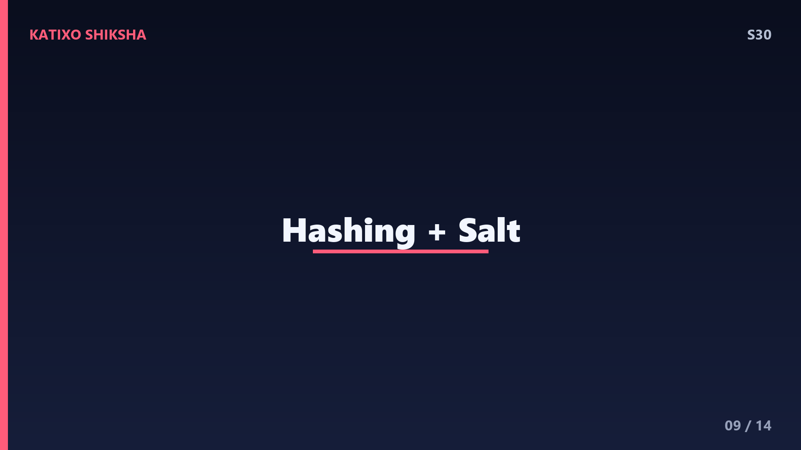
Slide 9Hashing को और गहराई से समझो। दोस्तों, मान लो तुम्हारा password है hello123। Website इसे hash करके कुछ ऐसा बना देती है, एक लंबा random दिखने वाला अक्षरों और numbers का जाल। हर बार जब तुम login करते हो, website तुम्हारे डाले गए password को फिर से hash करती है और दोनों codes मिलाती है। अगर दोनों match हुए, तो तुम सही हो! एक और चालाकी, websites password में एक random चीज़ जोड़ती हैं जिसे salt कहते हैं, ताकि दो लोगों का एक जैसा password भी अलग hash बने। इससे hackers का काम और मुश्किल हो जाता है। बहुत smart security है ना!
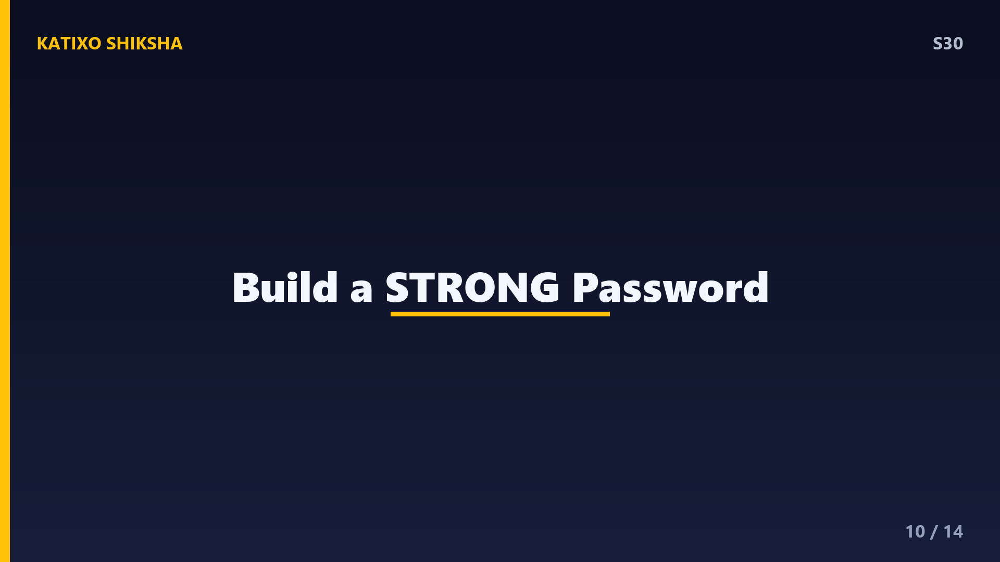
Slide 10अब जानो एक strong password कैसे बनता है। दोस्तों, hackers के पास ऐसे programs होते हैं जो हर second लाखों passwords try करते हैं, इसे brute force attack कहते हैं। password जितना लंबा और जटिल, तोड़ना उतना मुश्किल। एक छोटा सा password जैसे 12345 या तुम्हारा नाम, seconds में टूट जाता है! एक अच्छा password कम से कम 12 अक्षरों का हो, जिसमें capital letters, small letters, numbers, और symbols सब मिले हों। एक मज़ेदार trick, एक लंबा वाक्य सोचो जो सिर्फ तुम्हें याद हो। और हाँ, हर जगह एक ही password कभी मत रखना! दो-step verification भी ज़रूर on रखो।
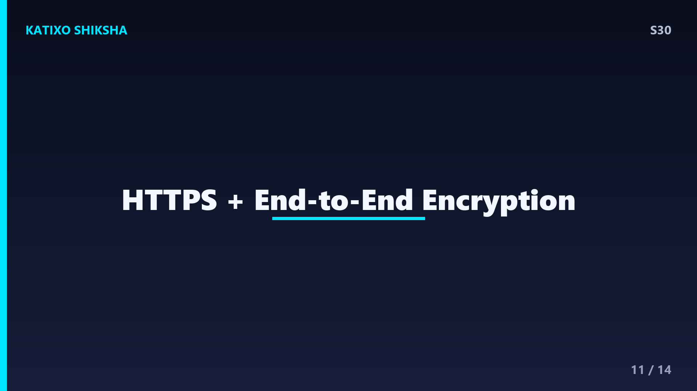
Slide 11अब सब जोड़ते हैं, यह सब साथ कैसे काम करता है। दोस्तों, जब तुम कोई secure website खोलते हो, browser के address में एक ताले का निशान और https दिखता है, यह encryption का संकेत है! यह HTTPS असल में एक system इस्तेमाल करता है जिसे TLS कहते हैं। पहले asymmetric encryption से एक secret key safely share की जाती है, फिर बाकी पूरी बातचीत तेज़ symmetric encryption से होती है। और WhatsApp जैसे apps end-to-end encryption देते हैं, यानी सिर्फ भेजने और पाने वाला ही message पढ़ सकता है, बीच में कंपनी भी नहीं! यही पूरी digital सुरक्षा की रीढ़ है।
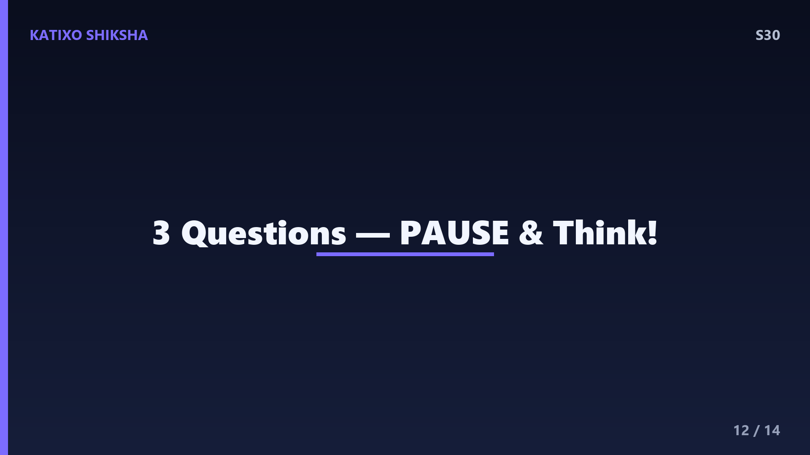
Slide 12Quick brain check, दोस्तों! तीन सवाल, ध्यान से सोचो। पहला, asymmetric encryption में कौन सी दो keys होती हैं, और कौन सी सबको दी जा सकती है? दूसरा, वो कौन सी one-way process है जिससे websites password को सीधे store करने के बजाय बदल देती हैं? तीसरा, एक secure website खोलने पर browser में encryption का कौन सा निशान और शब्द दिखता है? अब video को pause करो और तीनों के जवाब खुद सोचो। बिना scroll किए! तैयार हो? चलो जवाब मिलाते हैं!
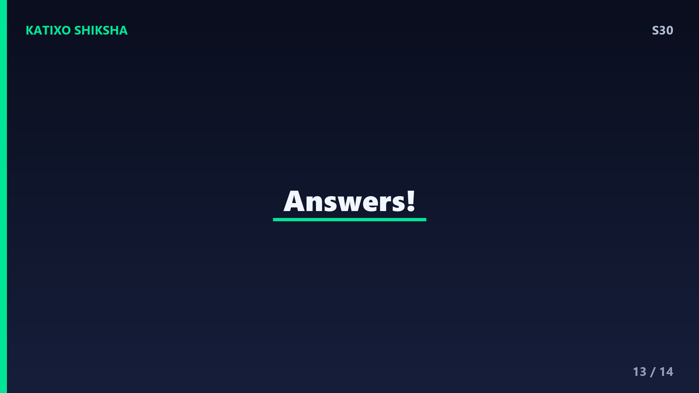
Slide 13जवाब का समय! पहला, asymmetric encryption में दो keys होती हैं, public key और private key, जिसमें public key सबको दी जा सकती है और private key सिर्फ अपने पास रहती है। दूसरा, वो one-way process है hashing, जो password को ऐसे code में बदलती है जिससे वापस password निकालना नामुमकिन है, और salt इसे और मज़बूत बनाता है। तीसरा, secure website खोलने पर browser में एक ताले का निशान और https शब्द दिखता है। सब सही? शाबाश दोस्तों!
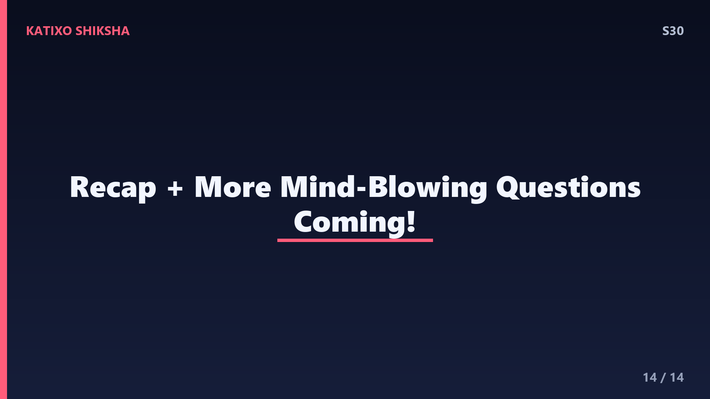
Slide 14तो दोस्तों, आज हमने सीखा कि encryption हमारे messages को ciphertext में बदलकर बचाता है, जिसकी key ही असली राज़ है। symmetric में एक key, और asymmetric में public और private दो keys होती हैं। passwords को hashing और salt से सुरक्षित रखा जाता है, और HTTPS व end-to-end encryption हमारी पूरी online दुनिया की रक्षा करते हैं। याद रखना, strong और अलग-अलग passwords रखो, और हर link पर भरोसा मत करना। गणित और logic ही हमारे सबसे बड़े रक्षक हैं! यह था इस सीज़न का एक और शानदार episode। आगे और भी मज़ेदार सवालों के जवाब लेकर आएँगे। Subscribe करना मत भूलना! Bye!